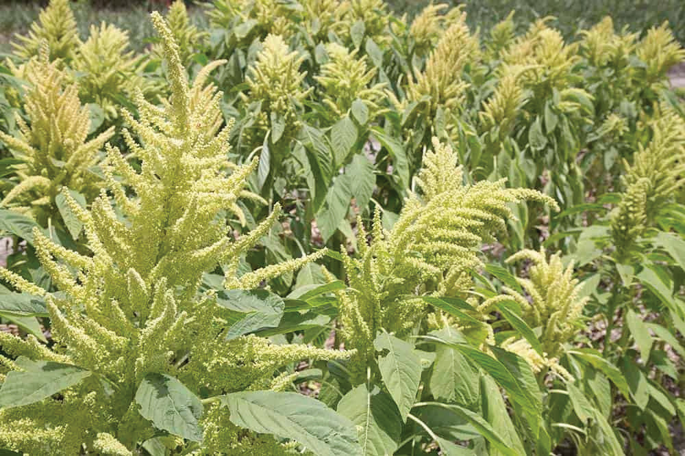
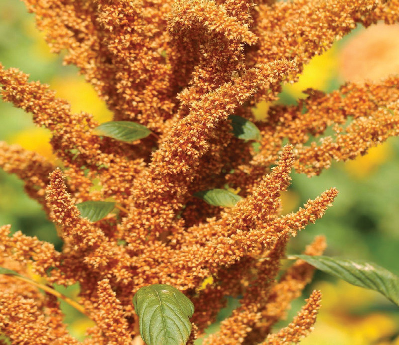

Planning for amaranth production
In planning for amaranth production, consider which variety to grow; for market or home consumption. Other considerations include when to produce the crop, reliable seed sources and arrangement of marketing strategies as the crop takes a short time to be ready for harvesting.
Activity 5.1
Use the internet or a library to find out about different types of amaranths that are commonly grown in Tanzania.
Look for information about how amaranth is grown, cared for, harvested, processed, and marketed.
Go to your school garden or a nearby amaranth farm.
Learn from the gardener on how amaranth is grown, taken care of, harvested, processed, and sold.
Write down the lessons you have learnt from the tasks 1 and 2 above.
Growing amaranth
Growing amaranth needs several steps. First, you need to choose where to plant the amaranth. Next, you need to prepare the place where you will plant the amaranth. Once the place is ready, you can plant the amaranth seeds or seedlings. After planting, you need to consider water management to the crop plants and keep the amaranth safe from pests and diseases.
Choosing a site for amaranth
Amaranth grows well on different types of soil. However, it prefers a well-drained soils such as loamy, sandy loamy, or silty loamy which is rich in organic matter. A pH level between 4.5 and 7.5 is suitable for the crop. Amaranth thrives well in hot and humid weather. The best temperature for amaranth is between 18 and 25 degrees Celsius. Amaranth does not tolerate waterlogging conditions. If there are free-range animals around, you should put a fence around the place.